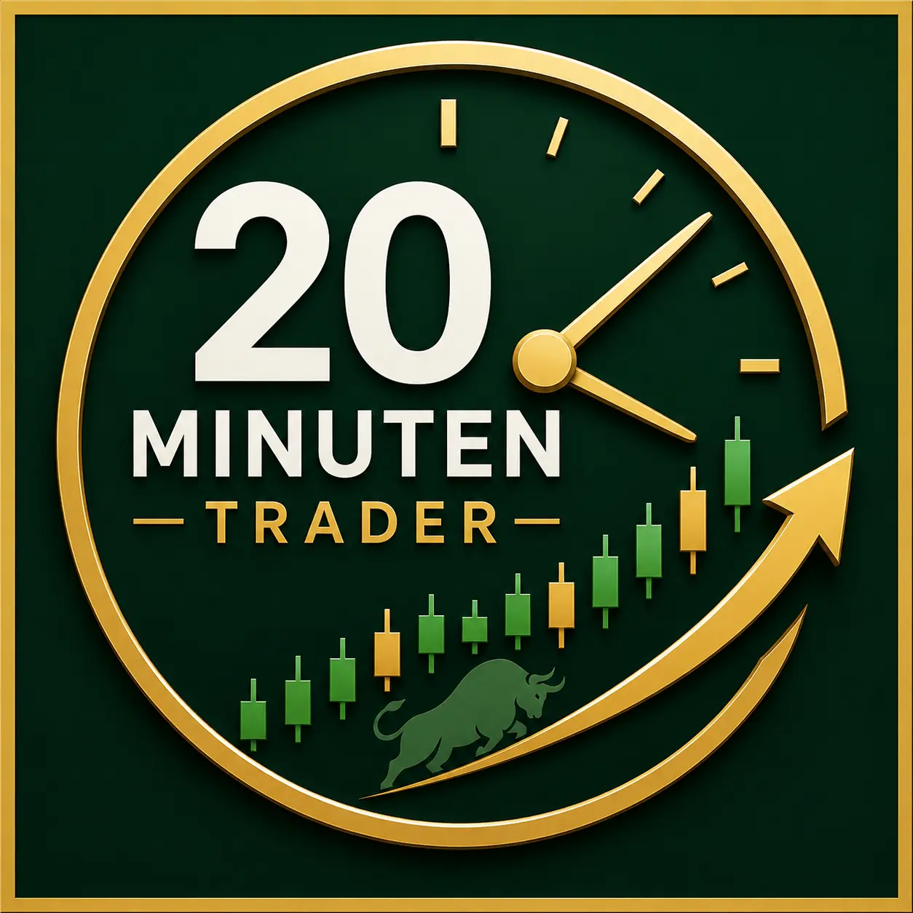

Vorbereiten
Prüfe Marktumfeld, wichtige Kursbereiche und die Bedingungen, die erfüllt sein müssen, bevor ein Trade überhaupt infrage kommt.

20-Minuten-TraderKostenloses Einsteigertraining
Dieser kostenlose Kurs zeigt dir, wie du wiederkehrendes Marktverhalten beobachtest, einen regelbasierten Trading-Plan entwickelst und Risiken definierst, bevor du einen Trade eingehst.
Keine Renditeversprechen. Keine „geheime Abkürzung“. Stattdessen ein strukturierter Lernrahmen für alle, die den Prozess verstehen möchten, bevor sie eigenes Kapital riskieren.
Die Grundidee
Viele Einsteiger verlieren ihre Disziplin, weil sie ohne Plan auf Kursbewegungen reagieren. Dieser Kurs konzentriert sich auf Vorbereitung, Regeln, Risikolimits und Auswertung – nicht auf Hype.
Prüfe Marktumfeld, wichtige Kursbereiche und die Bedingungen, die erfüllt sein müssen, bevor ein Trade überhaupt infrage kommt.
Definiere Einstiegskriterien, Ausstiegspunkt bei Fehleinschätzung, Positionsgröße und Exit-Logik, bevor du Kapital riskierst.
Dokumentiere Entscheidungen und Ergebnisse, um deinen Prozess zu verbessern, statt zufälligen Gewinnen hinterherzulaufen.
Für wen ist der Kurs?
Das Training passt zu dir, wenn du einen wiederholbaren Entscheidungsprozess lernen möchtest. Es ist nicht für Menschen gedacht, die garantierte Renditen, Handelssignale oder „kopiere einfach diesen Trade“-Versprechen suchen.
Kostenlose Kursinhalte
Wie du den Marktkontext prüfst, ohne in Charts zu versinken.
Wie du wiederholte Muster erkennst, ohne daraus Sicherheit abzuleiten.
Welche Bedingungen erfüllt sein sollten, bevor ein Einstieg erwogen wird.
Wie du Verlustgrenzen, Ausstiegskriterien und Positionsgrößen definierst.
Wie du Trades dokumentierst und die Qualität deiner Entscheidungen langfristig verbesserst.
Tägliche Aktienliste
Wir stellen dir täglich um 9:00 Uhr eine neue Auswahl interessanter Aktien als Orientierung für deine eigene Analyse bereit.
Die aktuelle Liste wird jeden Morgen bereitgestellt und enthält ausgewählte Aktien, die du anschließend selbst prüfen und analysieren kannst.
Hinweis: Die Aktienliste dient ausschließlich zu Informations- und Bildungszwecken und stellt keine Anlageberatung sowie keine Kauf- oder Verkaufsempfehlung dar.
Nutze den kostenlosen Kurs und entscheide anschließend selbst, ob der Ansatz zu deinen Zielen, deiner verfügbaren Zeit und deiner Risikobereitschaft passt.
Kostenlosen Kurs startenDieser Kurs stellt keine Anlageberatung dar. Du bist für deine eigenen Trading- und Anlageentscheidungen verantwortlich.
FAQ
Nein. Die Inhalte dienen ausschließlich der allgemeinen Finanzbildung. Deine persönliche finanzielle Situation, Ziele und Risikobereitschaft werden nicht berücksichtigt.
Nein. Trading ist mit erheblichen Risiken verbunden. Vergangene Ergebnisse, Beispiele und Erfahrungsberichte lassen keine verlässlichen Rückschlüsse auf zukünftige Ergebnisse zu.
Nein. Der Kurs ist so aufgebaut, dass Grundlagen zu Prozessen, Regeln und Risikomanagement verständlich erklärt werden.
Die im Kurs vermittelte Vorbereitung ist als 20-Minuten-Routine angelegt. Lernen, Üben und Auswerten benötigen jedoch zusätzliche Zeit.